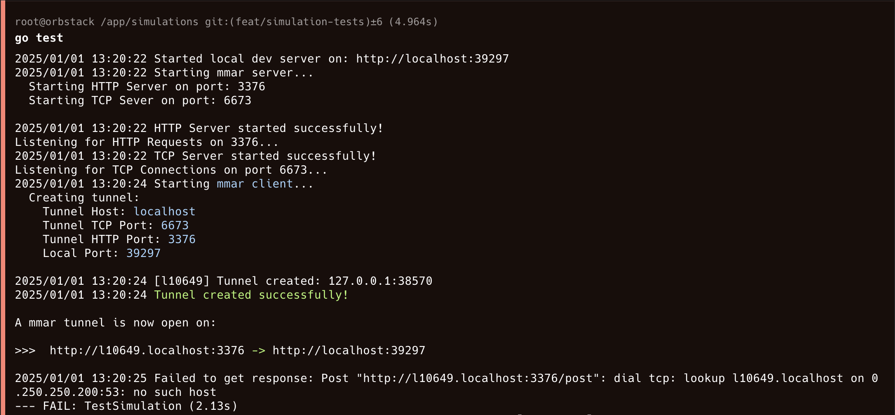
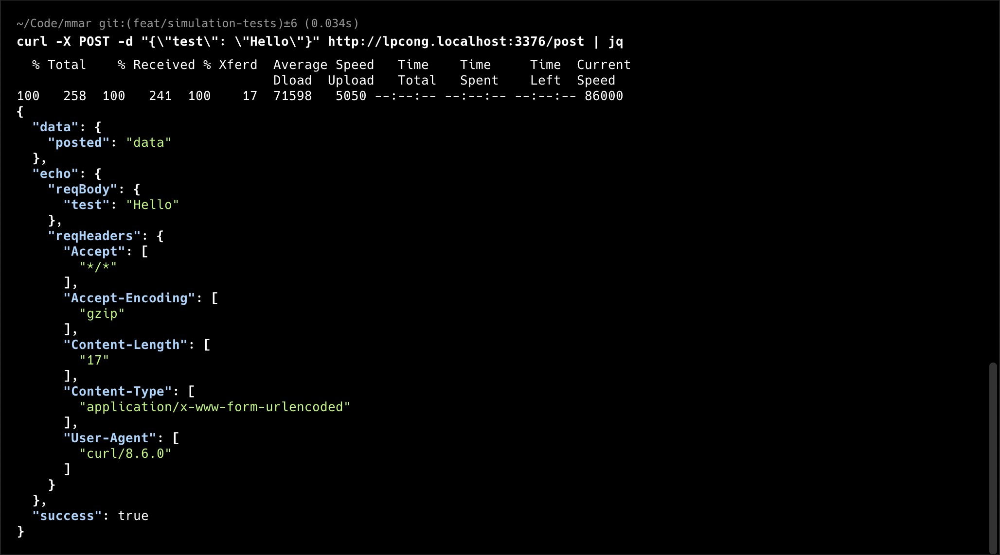
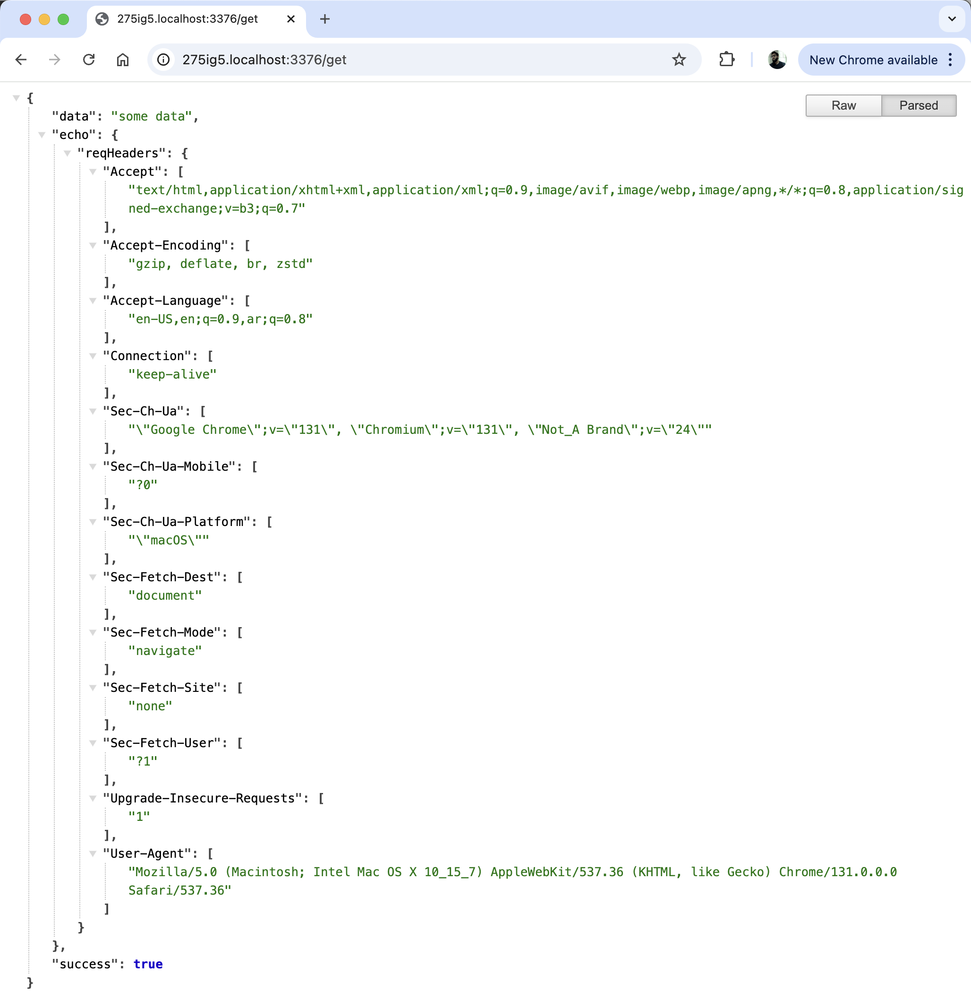
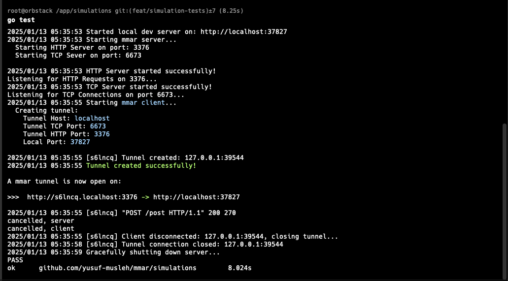

mmar - Devlog 5
This post is part of a devlog series documenting my progress building mmar, a cross-platform tunnel that exposes your localhost to the world. If you’d like to follow along from the beginning, you can find all the devlogs here.
Progress Update
It’s been some time since my last devlog, made some decent progress, but kept adding or fixing “one more thing” before deciding that I should probably take a step back and write about what I did.
This devlog is all about testing mmar. I recently came across Antithesis’s announcement post and the concept of Deterministic Simulation Testing (DST). The idea of being able to test your program as a whole, in a simulation of the worst scenarios; choppy networks, power outages, disk failures, all in a repeatable (deterministic) fashion. This is especially valuable for distributed systems or systems containing multiple components communicating to each other where faults can occurs on any of the layers.
It’s a very fascinating concept. Given that mmar is composed of multiple components, I wanted to shape my testing in a similar way, not full on DST but simulating actually running/using mmar and throwing a bunch of different scenarios (good and bad) to see how it handles them. With that, I definitely feel like I opened a can of worms while implementing it, but it found a few bugs!
Simulation Testing
In the context of testing mmar, I want to build the binary and perform tests on it, as opposed to writing unit tests for different parts of the code. I want to put mmar to the test, in a “real” world simulation.
To be able to write a simulation test for mmar, we need multiple entities running at the same time:
- a local dev server (this is the simulated localhost)
- a
mmarserver (run through the builtmmarbinary) - a
mmarclient (also run through the builtmmarbinary) which creates a tunnel pointing to the local dev server - clients to perform requests through the tunnel pointing to the local dev server
Once we are able to run each of these components, we will be able to run a simulation to test and confirm that mmar is acting as we expect. In other words, are the requests through the tunnels going through properly, with the correct headers/body forwarded? Are the responses also being received from the local dev server by the clients complete and correct? The next step would then be to introduce various fault cases.
Before we get to the various scenarios, let’s first discuss how to run the components mentioned above. Go has a built-in testing framework, so I made sure to make use of it.
Running local dev server
In Go’s standard library, there is a package called httptest. It allows you to create an HTTP server running on a port in order to carry out various HTTP testing. For our local dev server we simply create an instance of the Server provided in this package, configure various endpoint handlers that we would like interact with in our simulation test and then start it.
Upon starting the Server it will pick an arbitrary port that is available and bind to it, and it’s ready to start responding to requests. Here’s a small snippet of how that looks like:
package devserver
import (
"net/http"
"net/http/httptest"
)
const (
GET_SUCCESS_URL = "/get"
GET_FAILURE_URL = "/get-fail"
POST_SUCCESS_URL = "/post"
POST_FAILURE_URL = "/post-fail"
)
type DevServer struct {
*httptest.Server
}
func NewDevServer() *DevServer {
mux := setupMux()
return &DevServer{
httptest.NewServer(mux),
}
}
func setupMux() *http.ServeMux {
mux := http.NewServeMux()
mux.Handle(GET_SUCCESS_URL, http.HandlerFunc(handleGet))
mux.Handle(GET_FAILURE_URL, http.HandlerFunc(handleGetFail))
mux.Handle(POST_SUCCESS_URL, http.HandlerFunc(handlePost))
mux.Handle(POST_FAILURE_URL, http.HandlerFunc(handlePostFail))
return mux
}
Here we have a couple of different endpoints and their handlers defined. How do these handlers look like? Well, one of our goals for writing these simulation tests is to verify that the requests are being received by the local dev server and verify the responses are being received by the clients. For the response aspect, it’s straightforward, we can simply have each endpoint handler return a specific response, including additional response headers and verify that they were received. However for the request data verification how do we know that the local dev server receive the request data we sent it? One way to do it is by echoing back all the request headers and body as part of the response.
That way we could keep all the testing/verification code in one place, and keep the logic for the local dev server in its own file. Here’s an example of how one of the POST request handlers looks like:
func handlePost(w http.ResponseWriter, r *http.Request) {
// Include echo of request headers/body in response to confirm they were received
var reqBody interface{}
jsonDecoder := json.NewDecoder(r.Body)
err := jsonDecoder.Decode(&reqBody)
if err != nil {
log.Fatal("Failed to decode request body to json", err)
}
respBody, err := json.Marshal(map[string]interface{}{
"success": true,
"data": map[string]interface{}{
"posted": "data",
},
"echo": map[string]interface{}{
"reqHeaders": r.Header,
"reqBody": reqBody,
},
})
if err != nil {
log.Fatalf("Failed to marshal response for POST: %v", err)
}
w.Header().Set("Content-Type", "application/json")
// Add custom header to response to confirm to confirm that they
// propograte when going through mmar
w.Header().Set("Simulation-Header", "devserver-handle-post-success")
w.WriteHeader(http.StatusOK)
w.Write(respBody)
}
Finally, how do we actually run our new local dev server in the simulation tests? We simply import it in our test file and start it in the simulation test case:
package simulations
import "github.com/yusuf-musleh/mmar/simulations/devserver"
func StartLocalDevServer() *devserver.DevServer {
ds := devserver.NewDevServer()
log.Printf("Started local dev server on: http://localhost:%v", ds.Port())
return ds
}
func TestSimulation(t *testing.T) {
// ... some code ...
localDevServer := StartLocalDevServer()
defer localDevServer.Close()
// ... some code ...
}
Great! Now we have a local dev server that successfully starts and can handle various HTTP requests. Let’s look at the next component of our simulation test.
Running mmar server & client
For this to be a true simulation, we need to be able to run the mmar executable to start both the mmar server and mmar client. To access the mmar executable, I simply pre-built it and placed it in the same directory as the simulation test so it can be accessible. This could probably be automated in the future.
To run an executable from Go, there is a standard library package called os/exec. This package allows you to execute commands (executables) with arguments, in addition to passing in the Context for more control over cancellation. Passing in the context allows us to gracefully shutdown the mmar clients and mmar server at different stages of the simulation test.
For the purposes of the simulation test, we just need to run mmar server in its default settings:
import "os/exec"
func StartMmarServer(ctx context.Context) {
cmd := exec.CommandContext(ctx, "./mmar", "server")
cmd.Stdin = os.Stdin
cmd.Stdout = os.Stdout
cmd.Stderr = os.Stderr
cmd.Cancel = func() error {
fmt.Println("cancelled, server")
wait := time.NewTimer(4 * time.Second)
<-wait.C
return cmd.Process.Signal(os.Interrupt)
}
err := cmd.Run()
if err != nil && !errors.Is(err, context.Canceled) {
log.Fatal(err)
}
}
Notice that we pass in the path to the mmar executable in the same directory. We also configure the logs/errors to direct to STDOUT/STDERR so we can see them when the command is run in the context of the test. Additionally, I configured the cancellation handler to wait a few seconds before sending the interrupt signal, this is mainly because the both the server and the clients share the same context so I wanted to allow more time for the clients to showdown before the server begins to shutdown. Then finally we run the command.
Similarly, to run the mmar client we run the executable command with some arguments and some additional logic:
func StartMmarClient(ctx context.Context, urlCh chan string, localDevServerPort string) {
cmd := exec.CommandContext(
ctx,
"./mmar",
"client",
"--tunnel-host",
"localhost",
"--local-port",
localDevServerPort,
)
// Pipe Stderr To capture logs for extracting the tunnel url
pipe, _ := cmd.StderrPipe()
cmd.Cancel = func() error {
fmt.Println("cancelled, client")
return cmd.Process.Signal(os.Interrupt)
}
err := cmd.Start()
if err != nil && !errors.Is(err, context.Canceled) {
log.Fatal("Failed to start", err)
}
// Read through the logs (stderr), print them and extract the tunnel url
// to send back through the channel
go func() {
stdoutReader := bufio.NewReader(pipe)
line, readErr := stdoutReader.ReadString('\n')
for readErr == nil {
fmt.Print(line)
tunnelUrl := extractTunnelURL(line)
if tunnelUrl != "" {
urlCh <- tunnelUrl
break
}
line, readErr = stdoutReader.ReadString('\n')
}
// Print extra line at the end
fmt.Println()
}()
waitErr := cmd.Wait()
if waitErr != nil && !errors.Is(waitErr, context.Canceled) {
log.Fatal("Failed to wait", waitErr)
}
}
There are a few things that I want to highlight here. The first is that we pass in the port of the local dev server to the command, since as we saw we get a random available port every time the local dev server starts.
Next, is that when running a mmar client, by design we get a random tunnel url, that holds a new random subdomain. Since we are running the actual executable we have no control over what url gets generated every time we run a client or run the simulation tests. So we need a way to extract it from the logs, just like a normal user would use mmar. To do so, we need to pipe the logs and extract the tunnel url from it. We pipe STDERR rather than STDOUT because in Go’s log package, logs are actually written to STDERR by default. The tunnel url is extracted by simply looping through each line in a separate goroutine and running a regex to extract it if found. In both cases, we print the line so it also appears in the test output (I might change this as I run multiple mmar clients, currently still building the simulation test out for 1 client).
Once the tunnel url is extracted, we write it to a channel that is passed in from the main simulation test so it can later be used when making requests to the tunnel. The Cancel handler simply sends the interrupt signal right away to simulate a user pressing ctrl+c to shutdown the client.
Going back to our TestSimulation, these functions are called in separate goroutines as follows:
func TestSimulation(t *testing.T) {
simulationCtx, simulationCancel := context.WithCancel(context.Background())
localDevServer := StartLocalDevServer()
defer localDevServer.Close()
go StartMmarServer(simulationCtx)
wait := time.NewTimer(2 * time.Second)
<-wait.C
clientUrlCh := make(chan string)
go StartMmarClient(simulationCtx, clientUrlCh, localDevServer.Port())
// Wait for tunnel url
tunnelUrl := <-clientUrlCh
// ... more code ...
}
After starting the local dev server (from the previous step), we start the mmar server, wait a few seconds then start a mmar client as new goroutines, passing in the simulationCtx. We then have a channel receiver waiting for the tunnel url to be extracted.
We now have all the components needed for mmar to operate, let’s start making requests to our tunnel!
Creating clients to perform requests
Clients in this context represent the end users who would be accessing the local dev server through the tunnel, for example through a browser or by making requests through code. To do so in the simulation test, we can create clients using Go’s net/http package and make requests to the various endpoints in our local dev server through the mmar tunnel and perform some checks and verifications that things are working as expected.
Let’s take a look at how to do this for the POST request:
// Test to verify successful POST request through mmar tunnel returned expected request/response
func verifyPostRequestSuccess(t *testing.T, client *http.Client, tunnelUrl string) {
reqBody := map[string]interface{}{
"success": true,
"payload": map[string]interface{}{
"some": "data",
"moreData": 123,
},
}
serializedReqBody, _ := json.Marshal(reqBody)
req, reqErr := http.NewRequest("POST", tunnelUrl+devserver.POST_SUCCESS_URL, bytes.NewBuffer(serializedReqBody))
if reqErr != nil {
log.Fatalf("Failed to create new request: %v", reqErr)
}
// Adding custom header to confirm that they are propogated when going through mmar
req.Header.Set("Simulation-Test", "verify-post-request-success")
resp, respErr := client.Do(req)
if respErr != nil {
log.Printf("Failed to get response: %v", respErr)
}
expectedReqHeaders := map[string][]string{
"User-Agent": {"Go-http-client/1.1"}, // Default header in golang client
"Accept-Encoding": {"gzip"}, // Default header in golang client
"Simulation-Test": {"verify-post-request-success"},
"Content-Length": {strconv.Itoa(len(serializedReqBody))},
}
expectedBody := map[string]interface{}{
"success": true,
"data": map[string]interface{}{
"posted": "data",
},
"echo": map[string]interface{}{
"reqHeaders": expectedReqHeaders,
"reqBody": reqBody,
},
}
marshaledBody, _ := json.Marshal(expectedBody)
expectedResp := expectedResponse{
statusCode: http.StatusOK,
headers: map[string]string{
"Content-Length": strconv.Itoa(len(marshaledBody)),
"Content-Type": "application/json",
"Simulation-Header": "devserver-handle-post-success",
},
body: expectedBody,
}
validateRequestResponse(t, expectedResp, resp, "verifyPostRequestSuccess")
}
Most of this code is self-explanatory. At a high level, we make a POST request to the local dev server’s post request handler endpoint. Then verify that both the request headers/body and the response headers/body are as we expect.
Pretty straightforward right? Let’s see how it looks like inside our TestSimulation:
func TestSimulation(t *testing.T) {
simulationCtx, simulationCancel := context.WithCancel(context.Background())
localDevServer := StartLocalDevServer()
defer localDevServer.Close()
go dnsserver.StartDnsServer()
go StartMmarServer(simulationCtx)
wait := time.NewTimer(2 * time.Second)
<-wait.C
clientUrlCh := make(chan string)
go StartMmarClient(simulationCtx, clientUrlCh, localDevServer.Port())
// Wait for tunnel url
tunnelUrl := <-clientUrlCh
// Initialize http client
client := httpClient()
// Perform simulated usage tests
// ... some code ...
verifyPostRequestSuccess(t, client, tunnelUrl)
// ... some code ...
}
Now we have all the components to finally run a simulation test. Let’s see what happens when we run go test:

That did not work… no such host looks like a DNS issue. Let’s try to make a request to the server through curl. To do that, we’ll run the simulation test again and in another terminal we make a curl request (to the new tunnel url) before it shuts down:

Interesting, it seems to be working fine through curl. How about if we try accessing the simulation test tunnel through the browser by hitting another GET method endpoint:

That seems to be working fine as well… which makes it even more interesting. Why didn’t the request made through the test code work? Both curl and chrome had no issues “finding” the host, however in the simulation test, I still get hit with the no such host error.
I began digging to try to see what might be causing this behavior. I found some interesting information. According to RFC 6761 Special-Use Domain Names:
6.3. Domain Name Reservation Considerations for "localhost." The domain "localhost." and any names falling within ".localhost." are special in the following ways: ... 3. Name resolution APIs and libraries SHOULD recognize localhost names as special and SHOULD always return the IP loopback address for address queries and negative responses for all other query types. Name resolution APIs SHOULD NOT send queries for localhost names to their configured caching DNS server(s). ...
That means that any localhost domains including subdomains should always loopback to 127.0.0.1 (or ::1 if IPv6). It turns out that chrome implements this as well as curl. However, in Go, the default resolver utilizes the default DNS server set on the OS you are running on for name resolution. In my case, if you notice in the look up error screenshot above, it says lookup l10649.localhost on 0.250.250.200:53: no such host. If we take a look at /etc/resolver.conf of the Docker container where I am running all this we’ll see that IP defined as the name server:
$ cat /etc/resolv.conf
# Generated by Docker Engine.
# This file can be edited; Docker Engine will not make further changes once it
# has been modified.
nameserver 0.250.250.200
# Based on host file: '/etc/resolv.conf'
# Overrides: []
So when we make a request through Go to the localhost subdomain, it is actually attempting to lookup l10649.localhost which is obviously not a real domain and will fail.
This wasn’t something I was really expecting to deal with when I set out to write a simulation test. Naturally I wanted to solve this issue with the least amount of time and effort to get back to the “actual” work of writing the tests. However I had a few constraints:
- I didn’t want to modify any files outside the
mmarrepo. Things like making changes to the/etc/hostsor/etc/resolv.confwere out of the question because I can’t assume all developers would run these tests inside a Docker container (nor do I want that as a requirement) and I wanted to avoid making changes to other developers’ setups implicitly. This constraint would also be useful if I decide to throw these simulation tests up on CI I wouldn’t need to include some additional setup. - I didn’t want to introduce a dependency by using an external solution, like Dnsmasq which you could most likely configure it to work with subdomains on localhost. As I mentioned in my first mmar devlog, I’m building
mmarwithout relying on any external dependancies outside Go’s Standard Library, so I definitely didn’t want to introduce one here just to get the simulation tests working.
With these constraints in mind, I set off to solve this problem. The first thing I attempted was to try and modify the http.Client to always resolve to localhost. If I could “override” http.Client by creating my own and implementing all the relevant methods to match its interface. As I began taking this approach, I quickly realized a major flaw in it. There were so many methods that need to be implemented to be able to “override” http.Client to include my custom functionality. As I was implementing the 5th method, things were getting messy, I paused and took a step back. Maybe this wasn’t the best way forward.
I took a deeper look at the net and net/http packages, looking for some possible paths forward. I found the net.Resolver struct quite interesting. It’s responsible for looking up the address you pass in to a http.Client request under the hood. As part of its interface it lets you define a Dial function which is responsible to make connections to the DNS server, provided its IP and port. So what if as part of running the simulation tests, we start a basic DNS server that always resolves to localhost and point the client’s resolver to its IP/port? That would theoretically solve our problem and still be within the constraints we have set above. I guess it was best to find a proper solution for this problem after all instead of hacking my way through it. It was time to roll up them sleeves and implement a basic DNS server :D
Building a (very) Basic DNS Server
A DNS server essentially maps a domain name (eg: google.com) to its IP (eg: 142.250.185.46). When a client makes a request to a certain domain, the resolver communicates with the DNS to determine which IP address to resolve this domain name to. In the case of the simulation test, all I want my DNS server to do is always resolve to localhost, similar to how curl and the browsers do so but on the DNS level rather than the client level.
By default, net.Resolver uses UDP when communicating with the DNS server. In general UDP is used as it is much faster and more scalable, especially for the use case of retrieving addresses quickly. So I decided to follow suit, creating a server that listens to UDP connections on a specific port. I just wanted to see if in fact net.Resolver will attempt to communicate with my server if I direct the Dial function to it, before implementing the DNS server.
package dnsserver
import (
"log"
"net"
"fmt"
)
const (
LOCALHOST_DNS_SERVER = "127.0.0.1:3535"
)
func StartDnsServer() {
addr, err := net.ResolveUDPAddr("udp", LOCALHOST_DNS_SERVER)
if err != nil {
log.Fatal("Failed to resolve UDP Address", err)
}
udpConn, err := net.ListenUDP("udp", addr)
if err != nil {
log.Fatal("Failed to start Basic DNS server", err)
}
for {
buffer := make([]byte, 512)
n, udpWriteAddr, err := udpConn.ReadFromUDP(buffer)
if err != nil {
log.Fatal("Failed to read from UDP connection", err)
}
fmt.Println("DNS request", buffer[:n])
}
}
Running this function would start a server on port 3535 listening for UDP connections. Let’s see what happens when we direct net.Resolver to it. The following function returns a http.Client with a resolver that points to our DNS server:
func httpClient() *http.Client {
// Adding custom resolver that points to our simulated DNS Server to
// handle subdomain on localhost
r := &net.Resolver{
PreferGo: true,
Dial: func(ctx context.Context, network, address string) (net.Conn, error) {
return net.Dial("udp", dnsserver.LOCALHOST_DNS_SERVER)
},
}
dial := &net.Dialer{
Resolver: r,
}
tp := &http.Transport{
DialContext: dial.DialContext,
}
client := &http.Client{Transport: tp}
return client
}
Now if we pass in the http.Client that is created and returned from the function above into verifyPostRequestSuccess we had above so the request is performed using the new resolver and then run the tests:
...
DNS request [163 155 1 0 0 1 0 0 0 0 0 1 6 116 114 122 109 105 122 9 108 111 99 97 108 104 111 115 116 0 0 28 0 1 0 0 41 4 208 0 0 0 0 0 0]
DNS request [69 255 1 0 0 1 0 0 0 0 0 1 6 116 114 122 109 105 122 9 108 111 99 97 108 104 111 115 116 0 0 1 0 1 0 0 41 4 208 0 0 0 0 0 0]
...
Interesting! Our DNS server received some data when the request was made. In order to understand what these bytes represent and how we should respond, we need to take a quick look at the DNS protocol.
Speedrunning DNS Protocol
Without getting too deep into the details and for the purposes of our use case, I only needed to understand what is being sent, and based on that, how I should respond. If we take a quick look at the RFC we find that all communication is done through a formatted message. A message is structured as follows:
+---------------------+
| Header |
+---------------------+
| Question | The question for the name server
+---------------------+
| Answer | Resource Records (RRs) answering the question
+---------------------+
| Authority | Resource Records (RRs) pointing toward an authority
+---------------------+
| Additional | Resource Records (RRs) holding additional information
+---------------------+
The sections that we are mainly interested in are the Header, Question and Answer sections.
Header Section
The Header section contains information about the message itself, for example whether this message is a question to the DNS server or an answer from the DNS server. From the RFC, the header looks like the following:
0 1 2 3 4 5 6 7 8 9 10 11 12 13 14 15
+--+--+--+--+--+--+--+--+--+--+--+--+--+--+--+--+
| ID |
+--+--+--+--+--+--+--+--+--+--+--+--+--+--+--+--+
|QR| Opcode |AA|TC|RD|RA| Z | RCODE |
+--+--+--+--+--+--+--+--+--+--+--+--+--+--+--+--+
| QDCOUNT |
+--+--+--+--+--+--+--+--+--+--+--+--+--+--+--+--+
| ANCOUNT |
+--+--+--+--+--+--+--+--+--+--+--+--+--+--+--+--+
| NSCOUNT |
+--+--+--+--+--+--+--+--+--+--+--+--+--+--+--+--+
| ARCOUNT |
+--+--+--+--+--+--+--+--+--+--+--+--+--+--+--+--+
I’ll only mention the relevant parts that we care about. The first 2 bytes (16 bits) represent the ID of the message, it needs to be present in the reply (or answer) for this message. The next 2 bytes have more data broken down, the 1st bit (QR) represents whether this message is a question (0) or an answer (1). For the remaining 15 bits we don’t really need to worry about since we are not dealing with any special cases, so we can safely ignore them (or set them all to 0s). Feel free to read further into the RFC or other sources if you are interested in diving deeper (we’re speed running here :D). The next 2 bytes (QDCOUNT) represent number of questions sent to DNS server, the 2 bytes after that (ANCOUNT) represent number of records in the answers. The final 4 bytes (NSCOUNT) and (ARCOUNT) we don’t need to worry about as well.
If we look back at the data sent to our DNS server, and we extract the headers, lets map one of them to the header format above:
163 155 1 0 0 1 0 0 0 0 0 1
The first 12 bytes (96 bits) represent the header, which maps to the following:
0 1 2 3 4 5 6 7 8 9 10 11 12 13 14 15
+--+--+--+--+--+--+--+--+--+--+--+--+--+--+--+--+
| 163 | 155 |
| = | = |
| 1 0 1 0 0 0 1 1| 1 0 0 1 1 0 1 1| ID: 163 155 (0xA39B in Hex)
+--+--+--+--+--+--+--+--+--+--+--+--+--+--+--+--+
| 1 | 0 |
| = | = |
| 0| 0 0 0| 0| 0| 0| 1| 0 0 0| 0 0 0 0 0| QR: 0 (means its a Question)
+--+--+--+--+--+--+--+--+--+--+--+--+--+--+--+--+
| 0 | 1 |
| = | = |
| 0 0 0 0 0 0 0 0| 0 0 0 0 0 0 0 1| QDCOUNT: 1 (only 1 Question)
+--+--+--+--+--+--+--+--+--+--+--+--+--+--+--+--+
| 0 | 0 |
| = | = |
| 0 0 0 0 0 0 0 0| 0 0 0 0 0 0 0 0| ANCOUNT: 0 (0 answers)
+--+--+--+--+--+--+--+--+--+--+--+--+--+--+--+--+
| 0 | 0 |
| = | = |
| 0 0 0 0 0 0 0 0| 0 0 0 0 0 0 0 0| NSCOUNT (Not important to us)
+--+--+--+--+--+--+--+--+--+--+--+--+--+--+--+--+
| 0 | 1 |
| = | = |
| 0 0 0 0 0 0 0 0| 0 0 0 0 0 0 0 1| ARCOUNT (Not important to us)
+--+--+--+--+--+--+--+--+--+--+--+--+--+--+--+--+
Question Section
The Question section contains a number of questions (equal to QDCOUNT) that are being asked to the DNS server, typically there is just 1 question. You can think of a question as what the client is asking to lookup a particular domain using the DNS server.
Each question entry has the following:
0 1 2 3 4 5 6 7 8 9 10 11 12 13 14 15
+--+--+--+--+--+--+--+--+--+--+--+--+--+--+--+--+
| |
/ QNAME /
/ /
+--+--+--+--+--+--+--+--+--+--+--+--+--+--+--+--+
| QTYPE |
+--+--+--+--+--+--+--+--+--+--+--+--+--+--+--+--+
| QCLASS |
+--+--+--+--+--+--+--+--+--+--+--+--+--+--+--+--+
The QNAME section is of variable length as it varies depending on the domain name being lookuped up. It represents a sequence of all the subdomains in the domain provided. For each one it includes a number representing the length of the current subdomain, followed up by bytes of that length representing that subdomain, followed by either another number representing another subdomain or a null byte (0) meaning the end of the QNAME section. We will look at how this looks like for the messages we got, but as a quick example to help with understanding, the domain google.com would be represented like:
6 [6 bytes, 1 byte for each char in 'google'] 3 [3 bytes, 1 byte for each char in 'com'] 0
The QTYPE section consists of 2 bytes, which represent what type of question is being asked. There are quite a few different types, however for our purposes the main ones we are concerned about are A (IPv4 address) and AAAA (IPv6 address). The answer (response) should match accordingly.
The QCLASS section represents the class of which this domain belongs to. While reading around a bit, it seems like this field had some legacy values but the main one we are concerned with is 1 = IN (Internet), which also happens to be the default.
Now for the fun part, here are the following bytes after the header, representing the question section:
6 116 114 122 109 105 122 9 108 111 99 97 108 104 111 115 116 0 0 28 0 1
Since there’s quite a bit of data for the QNAME, let’s look at it in a more compact way:
6means we have 6 bytes (chars):116=>t114=>r122=>z109=>m105=>i122=>z- All together:
trzmiz
9means we have 9 bytes (char)108=>l111=>o99=>c97=>a108=>l104=>h111=>o115=>s116=>t- All together:
localhost
0means end ofQNAME
The requested domain is trzmiz.localhost, we can finally see a mmar tunnel url! Let’s look at the remaining parts of the question section:
0 1 2 3 4 5 6 7 8 9 10 11 12 13 14 15
+--+--+--+--+--+--+--+--+--+--+--+--+--+--+--+--+
| |
/ QNAME / (We saw above)
/ /
+--+--+--+--+--+--+--+--+--+--+--+--+--+--+--+--+
| 0 | 28 |
| = | = | QTYPE: 28 (means AAAA IPv6 address record)
| 0 0 0 0 0 0 0 0| 0 0 0 1 1 1 0 0|
+--+--+--+--+--+--+--+--+--+--+--+--+--+--+--+--+
| 0 | 1 |
| = | = | QCLASS: 1 (means its IN - Internet)
| 0 0 0 0 0 0 0 0| 0 0 0 0 0 0 0 1|
+--+--+--+--+--+--+--+--+--+--+--+--+--+--+--+--+
The QTYPE value for AAAA IPv6 records is 28. The QCLASS is 1 as we’ve seen earlier this means IN or Internet.
Remaining Data
For the rest of the bytes in the message:
0 0 41 4 208 0 0 0 0 0 0
Since we know from the previous sections that this DNS message is a Question and has 0 Answers, the data in the remaining bytes represents the Additional Section which we don’t really care about, so we’ll just ignore it.
Constructing a Response
So far we parsed and understood the DNS message we received from Go’s client when going through our DNS server. Now we need to actually respond, good thing we now know how to speak DNS :D
So to keep things as simple as possible. This DNS server will always point you to ::1 which is the loop back address (localhost) for AAAA (IPv6) records.
Note: Again the main goal is to get the simulation test to properly resolve localhost subdomains rather than a complete and correct implementation of the DNS protocol. I experimented a bit with only responding to one type of record rather than handling both, and that seems to give me the same outcome, so I opted to always respond with AAAA (IPv6) answers.
Response Header
To build the Header for the response, the first step is to include the same ID that was provided in the DNS query. Next, we set the (QR) flag to 1 in the Header that indicates this is a response, for the remaining 15 bits in that row we don’t care about so we can just zero them out. Next we include the same questions count, add a 1 for the answers count, copy over the same authority records count (they are zero), and zero out the additional records count since we will not respond with any.
Here’s how our response Header looks like:
0 1 2 3 4 5 6 7 8 9 10 11 12 13 14 15
+--+--+--+--+--+--+--+--+--+--+--+--+--+--+--+--+
| 163 | 155 |
| = | = |
| 1 0 1 0 0 0 1 1| 1 0 0 1 1 0 1 1| ID: 163 155 (same ID)
+--+--+--+--+--+--+--+--+--+--+--+--+--+--+--+--+
| 128 | 0 |
| = | = |
| 1| 0 0 0| 0| 0| 0| 0| 0 0 0| 0 0 0 0 0| QR: 1 (means its an Answer)
+--+--+--+--+--+--+--+--+--+--+--+--+--+--+--+--+
| 0 | 1 |
| = | = |
| 0 0 0 0 0 0 0 0| 0 0 0 0 0 0 0 1| QDCOUNT: 1 (1 Question, no change here)
+--+--+--+--+--+--+--+--+--+--+--+--+--+--+--+--+
| 0 | 1 |
| = | = |
| 0 0 0 0 0 0 0 0| 0 0 0 0 0 0 0 1| ANCOUNT: 0 (1 Answer)
+--+--+--+--+--+--+--+--+--+--+--+--+--+--+--+--+
| 0 | 0 |
| = | = |
| 0 0 0 0 0 0 0 0| 0 0 0 0 0 0 0 0| NSCOUNT (same as before, not important to us)
+--+--+--+--+--+--+--+--+--+--+--+--+--+--+--+--+
| 0 | 0 |
| = | = |
| 0 0 0 0 0 0 0 0| 0 0 0 0 0 0 0 0| ARCOUNT (zeroed out)
+--+--+--+--+--+--+--+--+--+--+--+--+--+--+--+--+
All together looks like this:
163 155 128 0 0 1 0 1 0 0 0 0
Question Section
We need to include the question section, we simply match the same as the one that was provided in the query. So if we add that our response now looks like:
163 155 128 0 0 1 0 1 0 0 0 0 6 116 114 122 109 105 122 9 108 111 99 97 108 104 111 115 116 0 0 28 0 1
Answer Section
Now we need to include a new section that contains the answer, where the client should actually resolve to. According to the RFC the answer section is formatted like so:
0 1 2 3 4 5 6 7 8 9 10 11 12 13 14 15
+--+--+--+--+--+--+--+--+--+--+--+--+--+--+--+--+
| |
/ /
/ NAME /
| |
+--+--+--+--+--+--+--+--+--+--+--+--+--+--+--+--+
| TYPE |
+--+--+--+--+--+--+--+--+--+--+--+--+--+--+--+--+
| CLASS |
+--+--+--+--+--+--+--+--+--+--+--+--+--+--+--+--+
| TTL |
| |
+--+--+--+--+--+--+--+--+--+--+--+--+--+--+--+--+
| RDLENGTH |
+--+--+--+--+--+--+--+--+--+--+--+--+--+--+--+--|
/ RDATA /
/ /
+--+--+--+--+--+--+--+--+--+--+--+--+--+--+--+--+
You’ll notice it contains the NAME, TYPE and CLASS similar to the question section. To avoid repeating all that name data, we can actually include a pointer in the message that points to the data in the question section in order to read it, this is called message compression.
To represent a pointer, it consists of 2 bytes (octets), where the first 2 bits are always 1s, followed by an offset from the first byte of the message to reach the beginning of the NAME portion. In this example, that offset is 12 so here is how the pointer looks like:
0 1 2 3 4 5 6 7 8 9 10 11 12 13 14 15
+--+--+--+--+--+--+--+--+--+--+--+--+--+--+--+--+
| 192 | 12 |
| = | = |
| 1 1| 0 0 0 0 0 0| 0 0 0 0 1 1 0 0| (pointer with offset = 12)
+--+--+--+--+--+--+--+--+--+--+--+--+--+--+--+--+
Since we are using the compressed message format, we no longer need to include the NAME section. So we can skip it and add the TYPE and CLASS sections, they should match the values in the question section. Here’s how they’re represented in bytes starting with the pointer offset:
192 12 0 28 0 1
Next we include a TTL, we’ll set it to 3600 (1 hour in seconds), which is represented by 32 bits (4 bytes):
0 1 2 3 4 5 6 7 8 9 10 11 12 13 14 15
+--+--+--+--+--+--+--+--+--+--+--+--+--+--+--+--+
| 0 | 0 |
| = | = |
| 0 0 0 0 0 0 0 0| 0 0 0 0 0 0 0 0|
+--+--+--+--+--+--+--+--+--+--+--+--+--+--+--+--+
| 14 | 16 |
| = | = |
| 0 0 0 0 1 1 1 0| 0 0 0 1 0 0 0 0| (represents 3600 in Big Endian)
+--+--+--+--+--+--+--+--+--+--+--+--+--+--+--+--+
Let’s add the TTL to the bytes above:
192 12 0 28 0 1 0 0 14 16
Now add it to the response we have been constructing above:
163 155 128 0 0 1 0 1 0 0 0 0 6 116 114 122 109 105 122 9 108 111 99 97 108 104 111 115 116 0 0 28 0 1 192 12 0 28 0 1 0 0 14 16
The final 2 sections represent the actual answer. The first one, RDLENGTH, represents the length of the address that should be resolved to in bytes. Since we are always returning the IPv6 loopback address (::1), they are represented by 128 bits (16 bytes) which means we can simply add 16 as the RDLENGTH:
0 1 2 3 4 5 6 7 8 9 10 11 12 13 14 15
+--+--+--+--+--+--+--+--+--+--+--+--+--+--+--+--+
| 0 | 0 |
| = | = |
| 0 0 0 0 0 0 0 0| 0 0 0 0 0 0 0 0|
+--+--+--+--+--+--+--+--+--+--+--+--+--+--+--+--+
| 0 | 16 |
| = | = |
| 0 0 0 0 0 0 0 0| 0 0 0 1 0 0 0 0| (represents 16 in Big Endian)
+--+--+--+--+--+--+--+--+--+--+--+--+--+--+--+--+
Finally we want to add RDATA, which would be the IPv6 loopback address. As we discussed the ::1 is represented by 16 bytes, all of them are zeroed out except the last, which just contains the value 1, so in bytes it simply looks like this:
0 0 0 0 0 0 0 0 0 0 0 0 0 0 0 1
To conclude the last part of constructing the response, lets add both RDLENGTH and RDATA to the response sequence we have:
163 155 128 0 0 1 0 1 0 0 0 0 6 116 114 122 109 105 122 9 108 111 99 97 108 104 111 115 116 0 0 28 0 1 192 12 0 28 0 1 0 0 14 16 0 0 0 16 0 0 0 0 0 0 0 0 0 0 0 0 0 0 0 1
Here’s a summary of what this response means (in human form :D):
- ID: 0xA39B
- Flags: Response, No error.
- Question: trzmiz.localhost (AAAA query for IPv6 address).
- Answer:
- Name: trzmiz.localhost
- Type: AAAA
- Class: IN
- TTL: 3600 seconds
- IPv6 Address: ::1 (loopback)
Sending Response
If you remember, before embarking on this DNS journey, we had the basic outline for the DNS server, that just accepted connections and read message data. The code that handles constructing the response and sending it back is implemented exactly how I described it above, appending the different bytes together. Once the response bytes have been constructed, I simply send it back to the same UDP connection.
Here is the updated DNS server code along with the function that constructs the response:
func StartDnsServer() {
addr, err := net.ResolveUDPAddr("udp", LOCALHOST_DNS_SERVER)
if err != nil {
log.Fatal("Failed to resolve UDP Address", err)
}
udpConn, err := net.ListenUDP("udp", addr)
if err != nil {
log.Fatal("Failed to start Basic DNS server", err)
}
for {
buffer := make([]byte, 512)
n, udpWriteAddr, err := udpConn.ReadFromUDP(buffer)
if err != nil {
log.Fatal("Failed to read from UDP connection", err)
}
go handleDnsConn(udpConn, buffer, n, udpWriteAddr)
}
}
// Handles building and returning the response for the DNS request, that resolves to ::1
// For more details on the message format: https://datatracker.ietf.org/doc/html/rfc1035#autoid-39
func handleDnsConn(udpConn *net.UDPConn, buffer []byte, n int, udpWriteAddr *net.UDPAddr) {
// Extracting information from DNS request
transactionID := buffer[:2]
questionsCount := buffer[4:6]
authorityRRs := buffer[8:10]
msgQuestion := buffer[12:n]
// Building DNS response
respBuffer := []byte{}
respBuffer = append(respBuffer, transactionID...)
// Adding Response flag
respFlag, _ := hex.DecodeString("8000") // Bits: 1000 0000 0000 0000
respBuffer = append(respBuffer, respFlag...)
// Adding QuestionsCount
respBuffer = append(respBuffer, questionsCount...)
// Adding Answers
answer, _ := hex.DecodeString("0001")
respBuffer = append(respBuffer, answer...)
// Adding Authorities
respBuffer = append(respBuffer, authorityRRs...)
// Adding Additionals (there are none)
respBuffer = append(respBuffer, byte(0))
respBuffer = append(respBuffer, byte(0))
// Adding the Name (eg: ikyx31.localhost)
i := 0
for i < n && hex.EncodeToString(msgQuestion[i:i+1]) != "00" {
label := int(msgQuestion[i])
for labelI := i; labelI < (i + label + 1); labelI++ {
respBuffer = append(respBuffer, msgQuestion[labelI])
}
i = i + label + 1
}
// Adding the domain terminator "0x00"
respBuffer = append(respBuffer, msgQuestion[i])
i++
// Adding Type
respBuffer = append(respBuffer, msgQuestion[i:i+2]...)
// Adding Class
respBuffer = append(respBuffer, msgQuestion[i+2:i+4]...)
// Adding pointer label and index
// See: https://datatracker.ietf.org/doc/html/rfc1035#section-4.1.4
pointerLabel, _ := hex.DecodeString("C0")
addrIndex := 12
respBuffer = append(respBuffer, pointerLabel...)
respBuffer = append(respBuffer, byte(addrIndex))
// Adding Type for answer
respBuffer = append(respBuffer, msgQuestion[i:i+2]...)
// Adding Class for answer
respBuffer = append(respBuffer, msgQuestion[i+2:i+4]...)
// Adding TTL (in seconds)
ttl := make([]byte, 4)
// Setting it to 1 hour (3600s)
binary.BigEndian.PutUint32(ttl, 3600)
respBuffer = append(respBuffer, ttl...)
// Adding length of data, since its always ::1 (IPv6) it will be 16 bytes
// Represented as 0000000000000001
dataLength := make([]byte, 2)
binary.BigEndian.PutUint16(dataLength, 16)
respBuffer = append(respBuffer, dataLength...)
for j := 0; j < 15; j++ {
respBuffer = append(respBuffer, byte(0))
}
respBuffer = append(respBuffer, byte(1))
// Writing the response back to UDP connection
_, err := udpConn.WriteToUDP(respBuffer, udpWriteAddr)
if err != nil {
log.Fatal("Failed to write UDP response", err)
}
}
This is the whole thing by the way. Like I said a (very) basic DNS server, that serves 1 purpose, redirecting to localhost.
Back to Simulation Tests
To refresh our memories a little bit, and so you don’t have to scroll back to the top, we reach the point of trying to make a POST request and verify its request/response header and body content in the simulation test:
func TestSimulation(t *testing.T) {
simulationCtx, simulationCancel := context.WithCancel(context.Background())
localDevServer := StartLocalDevServer()
defer localDevServer.Close()
go dnsserver.StartDnsServer()
go StartMmarServer(simulationCtx)
wait := time.NewTimer(2 * time.Second)
<-wait.C
clientUrlCh := make(chan string)
go StartMmarClient(simulationCtx, clientUrlCh, localDevServer.Port())
// Wait for tunnel url
tunnelUrl := <-clientUrlCh
// Initialize http client
client := httpClient()
// Perform simulated usage tests
// ... some code ...
verifyPostRequestSuccess(t, client, tunnelUrl)
// ... some code ...
}
So now that we have the DNS server in place, let’s try to run the simulation test again:

It worked! And the test case passed! I can now finally continue building the simulation tests.
This devlog is already quite long. It kinda represents the rabbit hole I got sucked into just to get the requests to work, but I’m pretty happy with how things turned out and I learned a lot.
Thanks again for checking this out, hope you enjoyed it, see you in the next one!